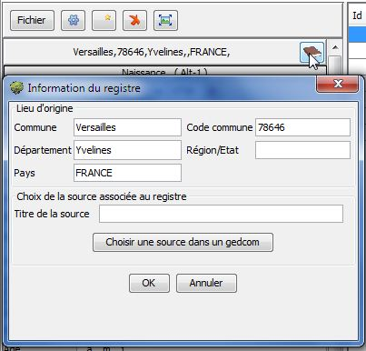
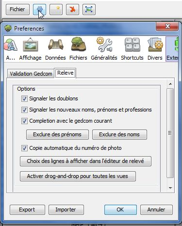

Configuration
Informations du registre
Les informations du registre sont accessibles en cliquant sur le bouton  dans l'entête de l'éditeur de relevés.
dans l'entête de l'éditeur de relevés.

Lieu d'origine
Cette rubrique sert à indiquer la commune de tous les évènements présents dans le relevé.
Le nom de la Commune est obligatoire
Les autres informations Département, Région, Pays sont facultatives.
Remarque
: ces informations ne sont utilisés qu'au moment d'enregistrer les
données dans un fichier, ou quand on importe des données
supplémentaires d'un autre fichier.
Choix de la source associé au registre
en cours de développement
Préférences de l'éditeur
Ces préférences permettent d'autoriser ou non les fonctions automatisées de l'éditeur.

Signaler les doublons
Quand
cette option est activée, un message d'avertissement est affiché si un
même relevé existe déjà avec une date d'évènement, un nom et un prénom
identique.
Signaler les nouveaux noms, prénoms et professions
Quand
cette option est activée, un message d'avertissement est affiché si un
nom ou prénom ou profession n'existe pas déjà dans les relevés.
Cet avertissement permet en particulier d'éviter les fautes de frappe sur des termes couramment utilisés.
Complétion avec le gedcom courant
Quand
cette option est activée, l'aide à la saisie utilise les noms, prénoms
et professions du fichier Gedcom courant pour compléter les mots au fur et à mesure de
la saisie.
Cette option est utile en particulier quand on commence
un relevé et qu'il y a encore peu de termes disponibles pour la complétion de la saisie parmi les relevés eux-mêmes.
Quand cette option est désactivée, la complétion utilise seulement les mots présents dans les relevés déjà saisis.
Remarque
: Il est préférable de choisir un gedcom contenant des données d'un
lieu et d'une date proche des relevés à saisir pour que la complétion
puisse proposer des données semblables à celles qui doivent être
saisies.
Les boutons Exclure des prénoms et Exclure des noms permettent de désigner les prénoms ou les noms à exclure de la complétion.
Choix des lignes à afficher dans l'éditeur de relevé
Ce bouton permet d'indiquer les lignes affichées ou masquées dans l'éditeur de relevé.
Par exemple, il est possible de masquer la ligne de la paroisse si celle-ci n'est jamais renseignée.
Activation du drag-and-drop pour toutes les vues
Ce
bouton sert à activer la copie par Glisser-déposer vers les vues
qui ont été affichées aprés le démarrage de l'outil de relevé.